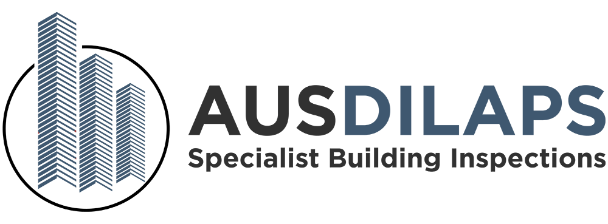

A project near you has asked us to photograph your home before work starts. An independent record of how it looked, in case anything changes.
Usually 15 to 45 minutes.
Every room, every wall, and any existing cracks.
The project near you pays for it.
Just tell the inspector.
Owners can ask us for their report.
Some projects add a visit after works, to compare.